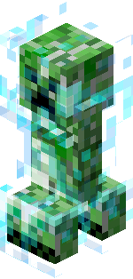
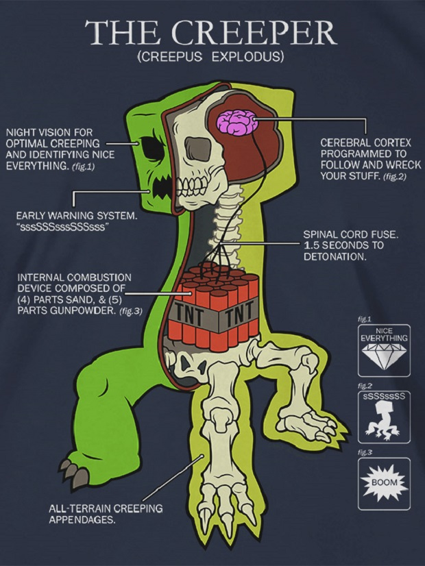

Rövid leírás
A creeperek a Minecraft nevű nyílt világú sandbox videójáték kitalált lényei. Ők ellenséges mobok, amelyekkel a játékvilágban bármikor találkozhatunk, vagy olyan helyeken, ahol ilyen mobok spawnolnak. Ahelyett, hogy hagyományosan megtámadnák a játékost, a játékoshoz kúsznak és felrobbannak, elpusztítva a környező blokkokat és potenciálisan megsebezve a játékost, ha az a robbanás sugarán belül van. Zöld álcájuk és csendes viselkedésük segíti a lopakodó támadásokat. A creeperek a Minecrafthoz először a játék 2009. augusztus 31-i pre-alfa frissítésében kerültek hozzá. A creeper a Minecraft egyik legismertebb ikonjává vált. A populáris kultúrában hivatkoznak rájuk és parodizálják őket, és a Minecraft árucikkekben és reklámokban is gyakran szerepelnek.
Történet
A Creeper egy gyakori ellenséges csőcselék, amely csendben közeledik a játékosokhoz, majd felrobban, ami bármilyen nehézségen elpusztíthatja a blokkokat és megölheti a páncélozatlan játékosokat (kivéve a békés módban).
Amikor villámcsapás éri, a Creeper feltöltődött Creeper válik, amifelerősíti robbanási erejét, és lehetővé teszi a csőcselék fejénekmegszerzését piglinekből, zombikból, csontvázakból és más kúszónövényekből,amelyeket megöl.
Jellegzetes megjelenése és egyedi és pusztító támadási módszere miatt a kúszónövény a Minecraft egyik legikonikusabb mobjává vált, promóciós anyagokban és árukban szerepel.

Szokásos
Feltöltve
Adatlap
Életerő
20 ( x 10)
x 10)
Viselkedés
Ellenséges
Idézőhely
0. fényszint
Sebzés
Közelharci:
Normál esetben: 3 ()
A robbanás a közelségtől és a nehézségtől függően változik.
Szokásos:
Easy: 22 × 11
Normal: 43 × 21.5
Hard: 64 × 32
Feltöltve:
Easy: 43.5 × 21.75
Normal: 85
× 42.5
Hard: 127.5
× 63.75
Szem Agy Figyelmeztető szerv Belső gyújtószerkezet Gerincvelő kanóc Minden terepre alkalmas láb
A Creeper teljes anatómiai képe
A képen látható jelmagyarázatokért kattints a kártyákra
